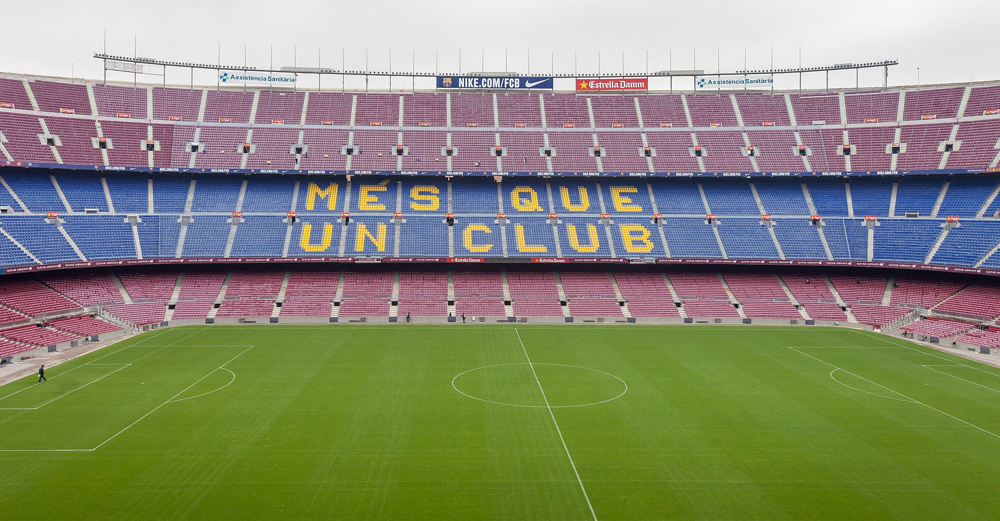
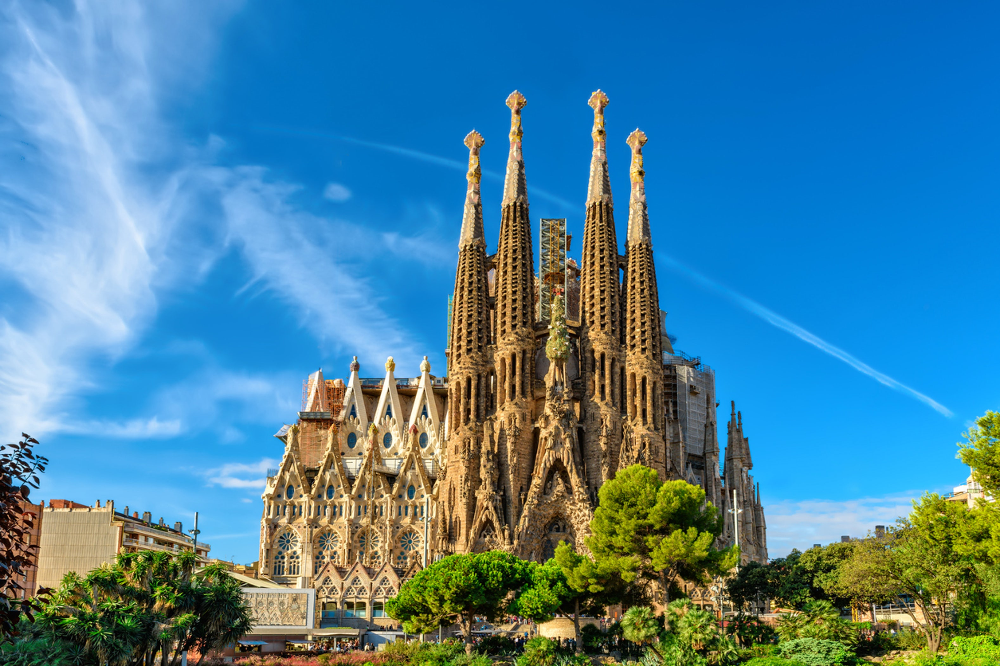
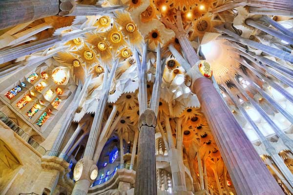

Il Camp Nou è un impianto calcistico ubicato nel quartiere Les Corts della città spagnola di Barcellona. Di proprietà del Barcelona, ospita gli incontri casalinghi della sua prima squadra dal 1957. Con una capacità di 99 354 spettatori, è l'impianto più capiente di Spagna e d'Europa, Fino al 2001 la struttura era nota ufficialmente come Estadi del Futbol Club Barcelona. In seguito, un referendum tra i soci del club decretò il cambio del nome in Camp Nou denominazione con la quale l'impianto era indicato informalmente dal 1957, anno della sua costruzione in sostituzione del vecchio Camp de Les Corts. Inaugurato il 24 settembre 1957, nel 1998 è stato inserito nella categoria 4 della classificazione UEFA. Vicino all'imponente struttura erano presenti altre installazioni del club come La Masia e il Mini Estadi, lo stadio in cui giocava la seconda squadra del Barcellona. Il Camp Nou ha ospitato due finali di Coppa dei Campioni/UEFA Champions League: la prima il 24 maggio 1989, quando il Milan sconfisse la Steaua Bucarest per 4-0; la seconda il 26 maggio 1999, in occasione della vittoria del Manchester United sul Bayern Monaco per 2-1. In totale sono cinque le finali europee svoltesi al Camp Nou, a cui si aggiungono le numerose finali di Coppa del Re e le partite delle fasi finali del campionato d'Europa del 1964, del campionato del mondo del 1982 e l'Olimpiade del 1992.
Il tempio espiatorio della Sagrada Familia, la cui costruzione iniziò nel 1882, è oggi uno dei tratti distintivi dell’identità di Barcellona, riconosciuto in tutto il mondo e visitato da milioni di persone. La parte costruita da Gaudí è stata dichiarata Patrimonio dell’Umanità dall’UNESCO nel 2005. La Commissione di costruzione spera di completare i lavori nel 2026, quando ricorrerà il centenario della morte di Gaudí. Nel 1881, grazie alle donazioni, la Asociación Espiritual de Devotos de San José acquistò un terreno di 12.800 m2 per la costruzione del tempio. ma soltanto il 19 marzo 1882, giorno di San Giuseppe, fu posata la prima pietra. Il progetto fu inizialmente affidato a un altro architetto, Francesc de Paula Villar, ma Gaudí lo ereditò alla fine del 1883. Il suo nuovo progetto era molto più ambizioso di quello proposto dal suo predecessore. Prevedeva la costruzione di un tempio a 5 navate con transetto, abside, deambulatorio esterno, 3 facciate e 18 torri. Questo è senza dubbio il progetto più complesso e singolare di tutti quelli che Gaudí ha intrapreso nel corso della sua carriera professionale e a cui ha dedicato ben 43 anni della sua vita. Lo sapevi che inizialmente Gaudí costruì solo l’intera facciata della Natività con le sue 4 torri, perché era consapevole del fatto che non l’avrebbe mai vista finita? Antoni Gaudí, che voleva creare il tempio perfetto, presenta la vita di Gesù e la storia della fede. Le 18 torri sono dedicate a figure importanti della Bibbia, come rispecchiato nelle dimensioni: 12 di esse rappresentano gli apostoli, 4 gli evangelisti, uno la Vergine Maria e la più alta di tutte Gesù Cristo, che sarà sormontata da una croce che raggiungerà i 172 metri di altezza. Una volta completata, la Sagrada Familia sarà l’edificio più alto di Barcellona e la chiesa più alta del mondo.
 